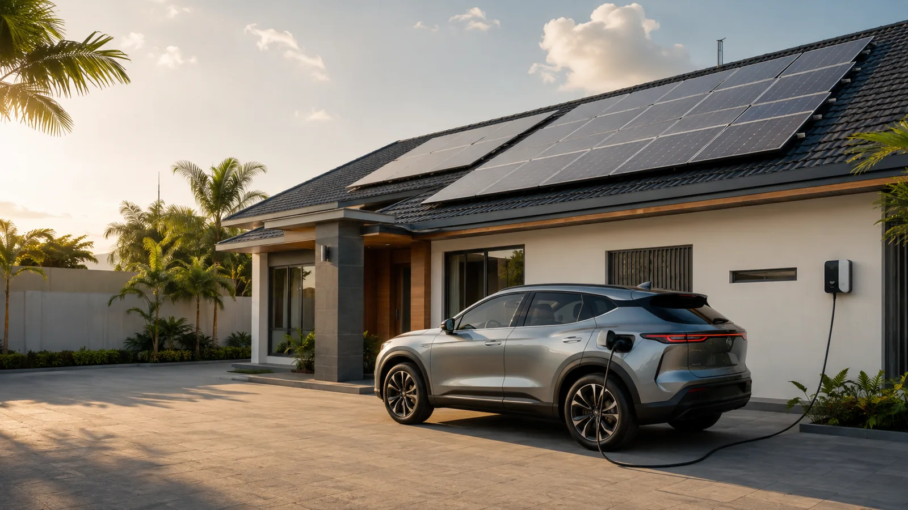

Electric vehicles are steadily entering Ghana’s mobility landscape. They reduce dependence on petrol or diesel and generally need less routine mechanical servicing, but they do not remove the need for energy. They change where that energy is purchased.
The petrol station may disappear from a driver’s weekly routine, while a significant new electrical load arrives at home. Prospective and existing EV owners therefore need to ask a practical question: is the property electrically and economically prepared to charge the vehicle?
Your EV may become one of the largest loads at home
Battery capacity varies widely. A small urban EV may carry roughly 20–35 kWh, while compact crossovers often sit around 45–65 kWh. Long-range and premium vehicles may exceed 80 kWh. These broad classes provide context, but the number on the vehicle specification is not a home-system design.
| EV category | Indicative battery range |
|---|---|
| Small urban EV | 20–35 kWh |
| Compact EV | 35–50 kWh |
| Compact crossover or SUV | 45–65 kWh |
| Long-range EV | 60–85 kWh |
| Large or premium EV | 80–100+ kWh |
You do not normally refill an EV from empty
Most drivers use only part of the vehicle’s range each day. The home needs to replace the energy used by normal travel, not automatically refill the entire battery every night.
The useful relationship is:
distance travelled + vehicle efficiency + charging behaviour + charging time + household consumption.
Two neighbours can own the same EV and require different energy systems. One may drive 30 kilometres per day and park at home during useful daylight. Another may travel 120 kilometres and return after sunset. The vehicle is identical; the operating profile is not.
Slow charging can be a smart home strategy
Public fast charging is important when time is limited or a driver is travelling. Home charging has a different operating window. A car may remain parked overnight for eight or ten hours, or stay home through much of a weekend solar-production period.
That changes the question from “How fast can this car charge?” to “How efficiently can the required energy be replenished before the next journey?” Appropriately designed lower-power AC charging can use long parking periods while reducing unnecessary stress on the property’s electrical capacity.
Your weekend could become part of the fuel strategy
When a vehicle is available at home in daylight, roof-mounted solar can contribute to charging alongside household loads. Under the right architecture, this energy does not always need to pass through a large stationary battery before reaching the car. The grid, solar array and any home battery can perform complementary roles.
This distinction can materially affect cost. A system designed to use daylight availability may be smaller and more efficient than one expected to transfer the same energy from a home battery at night.
Do you really need another huge battery?
The EV already contains substantial storage. Adding a second, very large stationary battery solely because the car battery is large can create an unnecessarily expensive installation. Significant home storage may still be justified when grid reliability, household backup or night-time charging requirements demand it—but that conclusion should come from the operating profile.
Professional sizing evaluates the energy relationship between vehicle and property rather than treating them separately. This is often where avoidable capital cost is found.
Your roof can support both home and mobility
When the vehicle leaves, the solar panels remain. Their energy can support selected household loads, recharge stationary storage or reduce grid consumption. The proposition is therefore broader than “solar panels for a car.” It is an energy platform serving both the property and mobility.
EV ownership changes the electricity bill
An EV shifts some expenditure away from fuel and toward electricity. Charging frequency, kilometres travelled, vehicle efficiency and charger power can materially change household consumption. Owners should assess this before purchase or soon afterwards.
- How far is the vehicle driven in a normal week?
- When is it usually available for charging?
- How quickly must the used energy be replaced?
- What does the property already consume?
- Can useful charging occur during solar hours?
- What household backup is genuinely required?
Why charging time matters to Ghana’s grid
One vehicle is a small load in national terms. Thousands charging during similar evening periods create a different planning problem. The challenge is not only how much energy EVs require, but when they request it.
Distributed solar, workplace charging, intelligent scheduling and appropriately sized storage can spread demand across locations and time. Homes, offices, schools and shopping centres where vehicles naturally remain parked can become part of a more flexible charging ecosystem.
The home is becoming an energy and mobility hub
The traditional model was one-directional: grid to house to appliances. A modern property may coordinate the grid, solar generation, stationary storage, household loads, an electric vehicle and energy-management software.
The result is not simply a house with solar panels. It is the beginning of a Home Energy and Mobility Hub in which each resource has a defined role.
One EV, two houses, two different systems
There should not be a universal “5 kW EV solar package” simply because a customer owns an electric vehicle. Roof exposure, weekly distance, arrival time, charger rating, existing electrical infrastructure and required morning range all influence the answer.
Hover Consult therefore starts with six connected inputs: the EV, driving pattern, charging preference, home, existing electricity consumption and backup requirement. Equipment quantities come afterwards.
Request a Solar for EV assessment
Tell us the vehicle, weekly kilometres, parking window and household context. We will frame the appropriate path: backup charging, solar-assisted charging, solar with storage, or an integrated home and EV system.
Start your EV energy assessment →Before buying a charger, ask a better question
Do not begin with “How many solar panels do I need?” or “How large should my inverter be?” Begin with:
How much energy does my lifestyle require, and what is the most economical way to provide it?
Your car has changed. The way your home plans and uses energy may need to change with it.
Public discussion
Ask a respectful question or share a relevant Ghanaian EV-charging experience. Submissions are reviewed before publication.